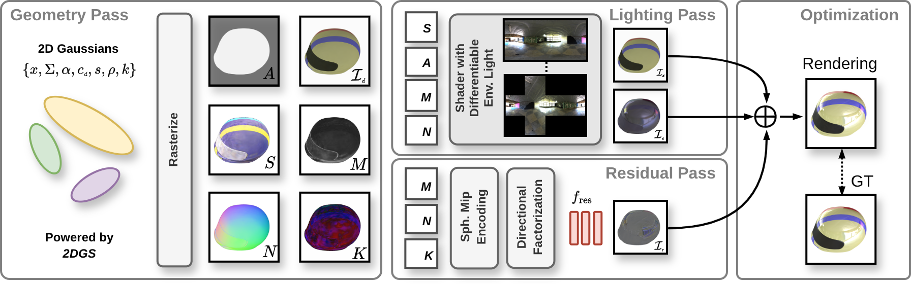
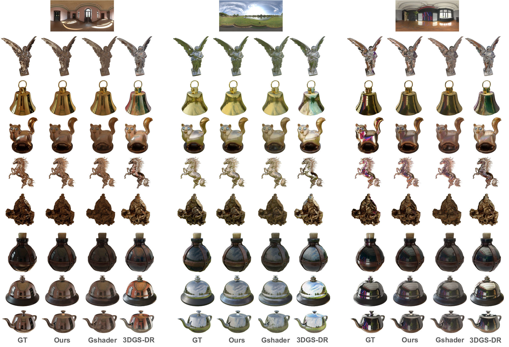
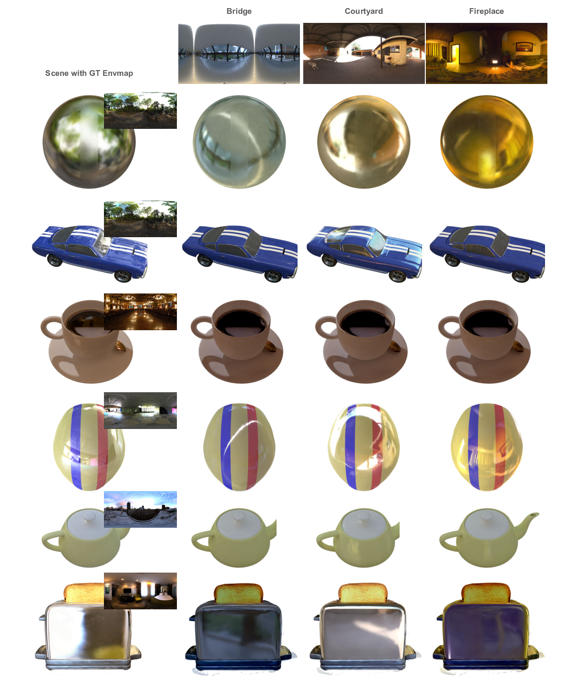
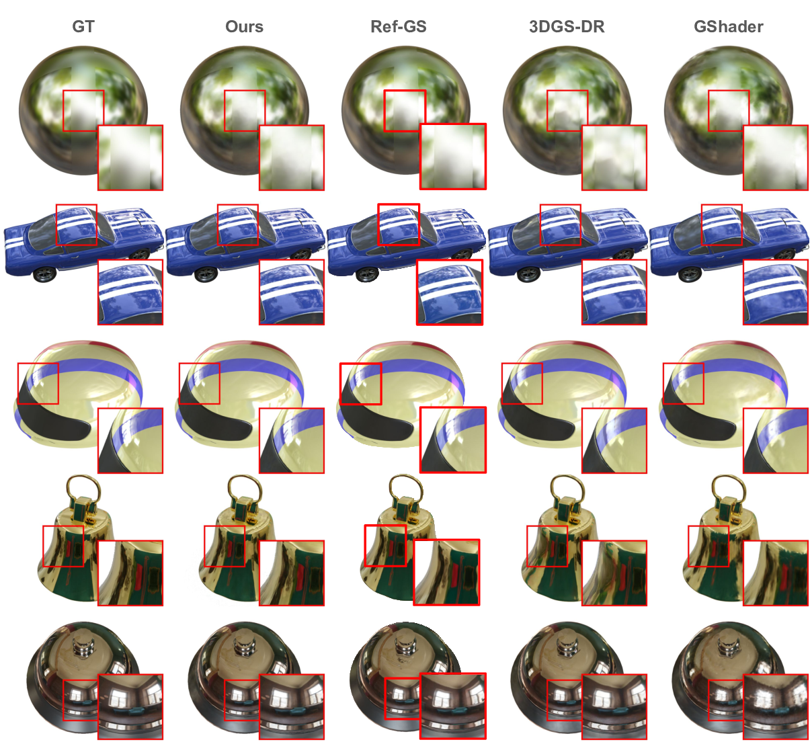
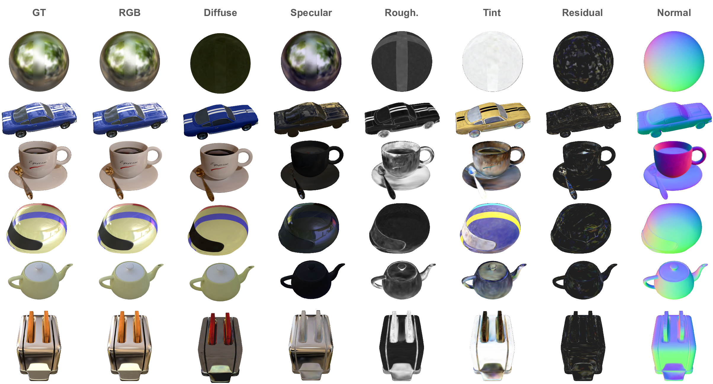
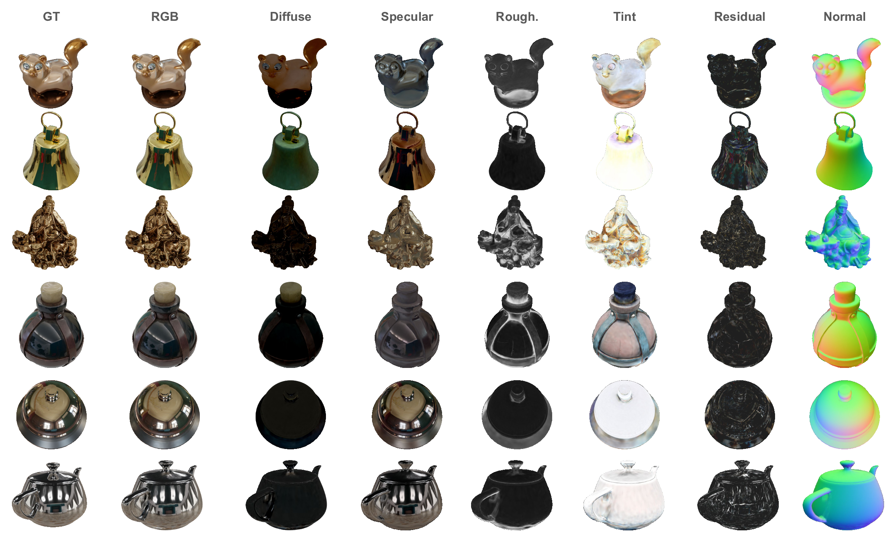

RGS-DR: Deferred Reflections and Residual Shading in 2D Gaussian Splatting
Check out our follow-up work SpecGloss-GS!
Video
Abstract
In this work, we address specular appearance in inverse rendering using 2D Gaussian splatting with deferred shading and argue for a refinement stage to improve specular detail, thereby bridging the gap with reconstruction-only methods. Our pipeline estimates editable material properties and environment illumination while employing a directional residual pass that captures leftover view-dependent effects for further refining novel view synthesis. In contrast to per-Gaussian shading with shortest-axis normals and normal residuals, which tends to result in more noisy geometry and specular appearance, a pixel-deferred surfel formulation with specular residuals yields sharper highlights, cleaner materials, and improved editability. We evaluate our approach on rendering and reconstruction quality on three popular datasets featuring glossy objects, and also demonstrate high-quality relighting and material editing.
Method

Our rendering pipeline consists of three passes. The geometry pass produces screen-space diffuse color, specular tint, roughness, normals, and low-dimensional features, which feed into the subsequent passes. The lighting pass employs a cube mipmap to model environmental light for shading. Meanwhile, the residual pass uses a spherical-mip-based directional encoding inspired by Ref-GS along with a shallow MLP to predict view-dependent effects not captured by the lighting pass.
Comparison of Relighting Results


Novel View Synthesis Results

Scene Decomposition
Shiny Synthetic

Glossy Synthetic

BibTeX
@misc{kouros2025rgsdr,
title={RGS-DR: Deferred Reflections and Residual Shading in 2D Gaussian Splatting},
author={Georgios Kouros and Minye Wu and Tinne Tuytelaars},
year={2025},
eprint={2504.18468},
archivePrefix={arXiv},
primaryClass={cs.CV},
url={https://arxiv.org/abs/2504.18468},
}